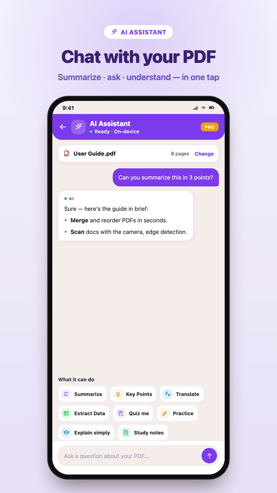
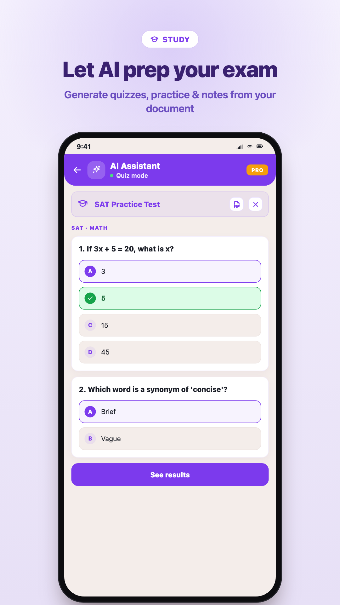
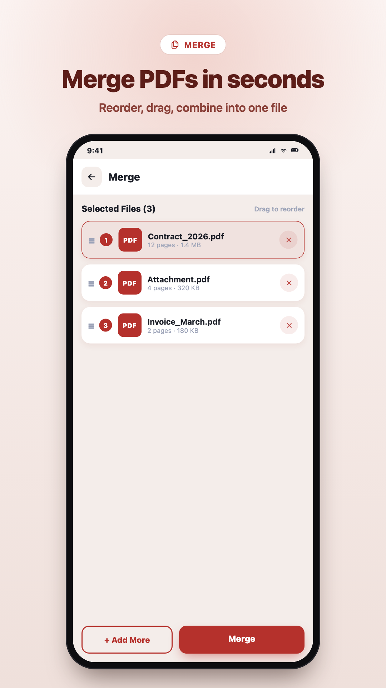
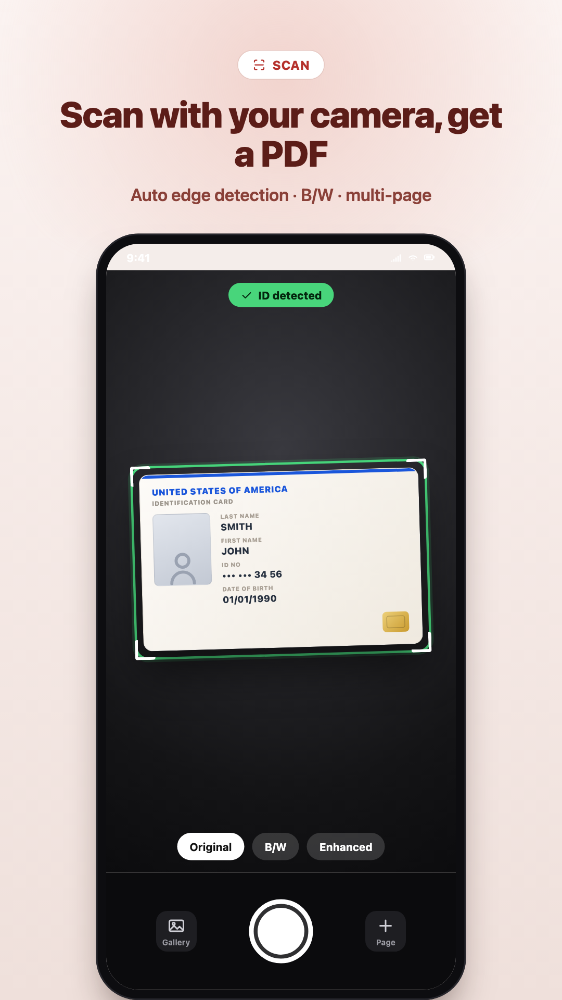
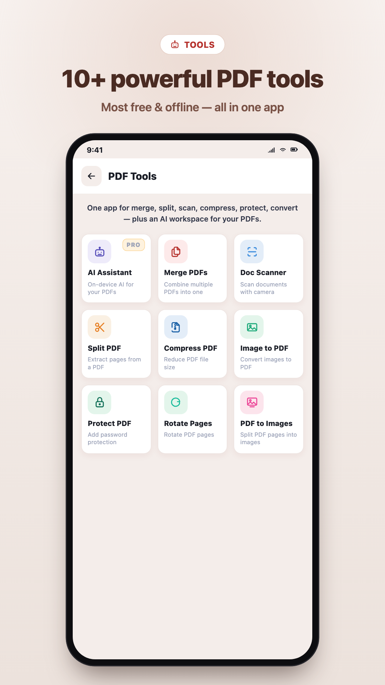

Merge, split, scan, compress, protect, and more — without uploading your files to the cloud. Pro adds an on-device AI assistant, OCR, and full converter.
Built for students, professionals, and anyone who lives in PDFs — fast actions, clear UI, dark mode.
Pro
✨
AI PDF Assistant
Turn contracts, lecture notes, and manuals into answers you can use — without sending files off your phone.
Chat with a loaded PDF: questions, summaries, and key takeaways tuned for real documents.
On-device processing with Pro when confidentiality matters (work, school, sensitive drafts).
Finish with export or share options that fit how you already deliver work.
📑
Merge & split
Combine invoices, chapters, or attachments into one polished file — or extract only the pages people actually need.
Drag to reorder PDFs and pages before merging; preview so nothing ships by surprise.
Split by single pages, ranges, or multiple outputs for email limits and version control.
Ideal for coursework packets, onboarding packs, and client-ready bundles.
📷
Scanner & image to PDF
Paper in your pocket becomes clean, shareable PDFs with automatic detection and quick cleanup.
Camera capture with perspective and edge cleanup for readable scans.
Multi-photo flows for handouts, receipts, or whiteboards — reorder before you export.
Turn existing JPG/PNG sets into one archival-quality PDF.
📦
Compress & protect
Meet mailbox limits and slow networks while keeping text sharp on the pages that matter.
Shrink heavy scans and brochures for email, chat apps, and upload portals.
Optional 128-bit password lock before sharing contracts or personal records.
Compression runs on-device for faster turnaround and peace of mind.
Pro
🔤
OCR
Make flat scans searchable and copy-friendly so you can cite, quote, and archive properly.
Text recognition tuned for mixed layouts and challenging photos when it counts.
Processing stays local — a strong fit for NDAs and private archives.
Works with your export flow once text is unlocked.
Pro
📄
Converter
Bridge formats when collaborators need Word or when you need crisp images for decks and social.
PDF to DOCX when someone needs edits, comments, or track changes elsewhere.
PDF to PNG/JPG for slides, appendices, and creative handoffs.
Large batches stay inside your Pro tier for predictable throughput.
↻
Rotate & watermark
Fix sideways scans and brand deliverables before they leave your device.
Rotate individual pages or whole sets right after import — no desktop required.
Add readable text watermarks (draft, confidential, client codes) for accountability.
Final polish for approvals, submissions, and internal review loops.
Most core tools are free and work offline. Pro unlocks AI, OCR, unlimited use, no ads, the converter, and priority processing. A one-time purchase can remove ads only (AI and OCR still need Pro).
Screenshots
A quick look at the flows you will use every day.

AI PDF Assistant — chat with your documents.

Study mode — generate a quiz from any PDF.
Home — every tool in one place.

Merge — combine and reorder PDFs.

Scanner — capture documents as clean PDFs.

Tools — compress, protect, convert, and more.
Why PDF Manager
Designed for real files and real deadlines — not another bloated editor.
✓
Offline-first Your PDFs are processed on-device. No forced cloud upload for core tools.
✓
Privacy No signup wall — open the app and get to work.
✓
Speed Merge, compress, and share in a few taps.
✓
Multilingual English, Turkish, German, French, Spanish, Arabic, and more.